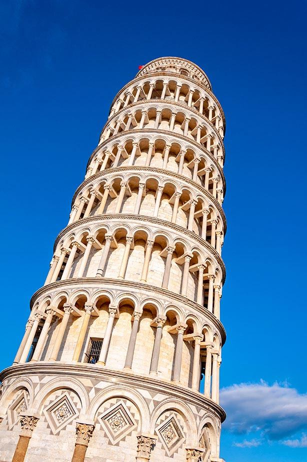

历史 · 人文 · 现场看点
比萨
Pisa · 奇迹广场的一组中世纪建筑
你们只留半天非常合适：LP 的一日建议本身也把重点高度集中在 Piazza dei Miracoli 的斜塔、大教堂和洗礼堂。
基于 Lonely Planet Italy 整理 · p.1657比萨这天不用复杂化
书里直接把斜塔称为奇迹广场三处中世纪景观里的“明星”。但真正完整的观感来自三件建筑放在同一片草地上的关系：钟楼（斜塔）、大教堂和洗礼堂。奇迹广场距离 Pisa Centrale 约2公里，因此你们去程坐公交、省体力，再集中逛广场是很合理的。
依据 LP p.123–124 的 Pisa 1 Day 建议
到现场按这个顺序看
1. 比萨斜塔 Torre di Pisa / Torre Pendente
先在外面从不同角度看倾斜程度，再按15:30预约登塔。塔本身是大教堂的钟楼，不是孤立的纪念碑。
2. 比萨大教堂 Duomo di Pisa
LP 特别提到这座保存漂亮的12世纪大教堂。即使不细看内部，也要把它和斜塔放在同一画面理解。
3. 圣若望洗礼堂 Battistero di San Giovanni
体量低矮、圆形，与高耸斜塔形成反差。你们不需要另外安排很久，外观足够完成“奇迹广场三件套”。
4. 草坪与整体比例
最后别急着走：退到草坪边缘看三座白色大理石建筑如何排布。这个整体感比单独拍“扶塔照”更能说明为什么这里叫奇迹广场。